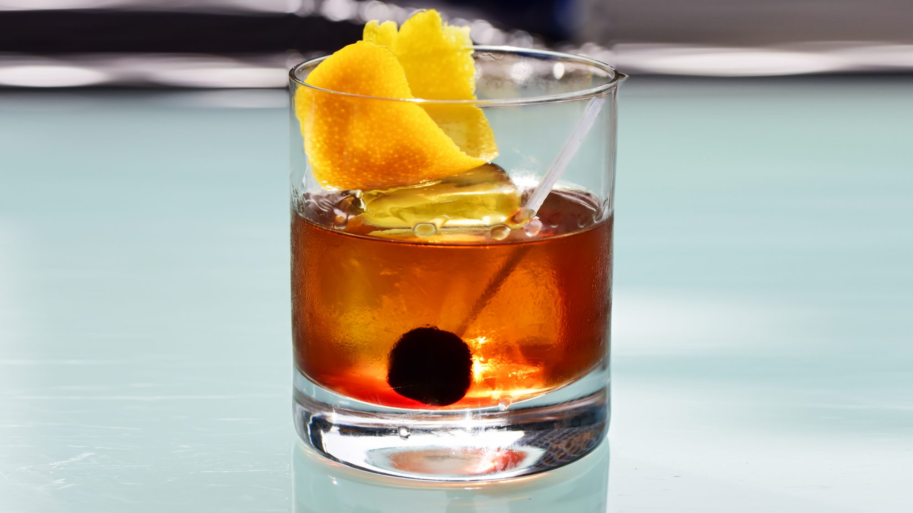

Manhattan

A classic whiskey cocktail made with only three ingredients. Snobs will always use rye, but bourbon tastes better.
Ingredients
- 2 ounces rye whiskey or bourbon
- 1 ounce sweet vermouth
- 2 to 3 dashes Angostura bitters
- 1 marashino cherry, for garnish
Steps
- Add whiskey, sweet vermouth, and bitters to a chilled cocktail glass or shaker filled with ice. Stir until well chilled.
- Strain the mixture into your serving glass; ass one large ice cube and garnish with teh cherry